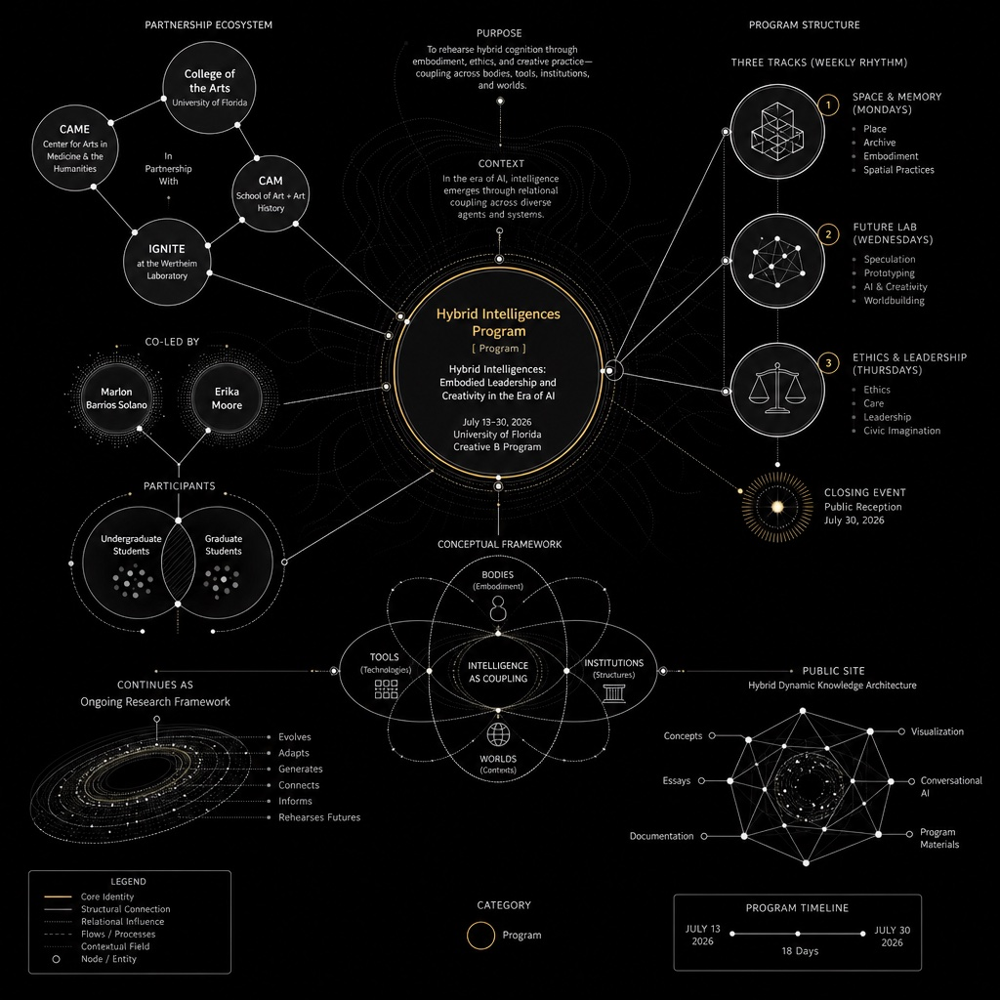
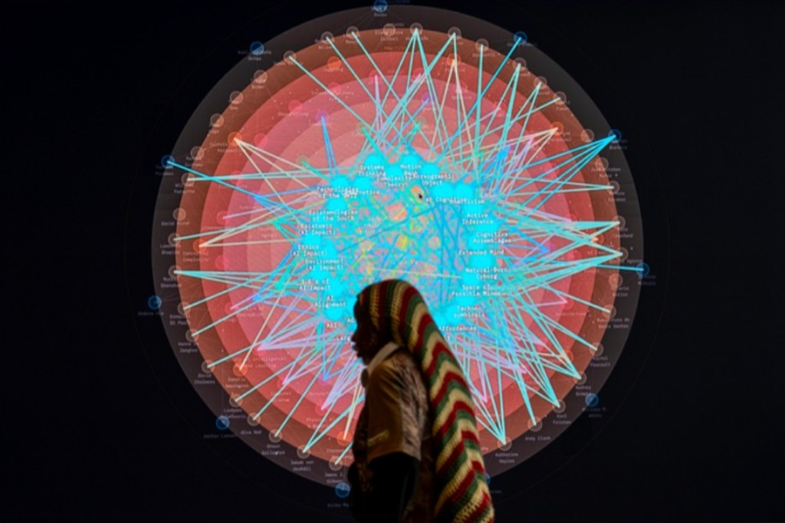

Hybrid Intelligences is a three-year research project led by Marlon Barrios Solano as Maker-in-Residence at the Center for Arts, Migration + Entrepreneurship (CAME) in the University of Florida College of the Arts. It was launched in summer 2026.
Its aim is to develop an epistemic framework that can account for, explain, and follow what happens when humans think, make, and decide inside cognitive assemblages — and to treat embodiment as a complex phenomenon, not a simple fact of having flesh.
The project
The work is Marlon’s research: a sustained inquiry into intelligence, creativity, and leadership in the era of AI. The first course — a prototype of the framework — was launched that summer as the inaugural Creative B 2026 program (Hybrid Intelligences: Embodied Leadership and Creativity in the Era of AI, July 13–30, 2026). The three-year project continues after that prototype. This site is one of its instruments.
Hybrid Intelligences does not treat intelligence as a thing located inside a skull, a machine, a server, or a sovereign individual. Intelligence is an activity of coupling. It is a relational event. It happens through bodies, tools, architectures, histories, gestures, laws, media, atmospheres, and the fragile rhythms of co-presence. In the era of artificial intelligence, this premise is not only philosophical. It is urgent. Mediation has become cognitive. The tools that once transmitted messages now participate in the production of perception, memory, imagination, decision, orientation, and future-making.
An epistemic framework
The goal is a vocabulary that can follow the developments and changes implicated when humans interact in cognitive assemblages — without collapsing into techno-dualism on one side or biological exceptionalism on the other.
Embodiment must be understood as complex and emergent. A living body is already a nested ecology: nerves, breath, posture, affect, memory, training, injury, culture, language, tools, rooms, laws, and other bodies. No single level explains cognition. Capacities appear from relations that none of the parts possess alone. Complex embodiment names this condition: mind as world-involving process, always more than biological presence, always more than technical mediation, always becoming through relation.
The project draws on enactivism and 4E cognition — embodied, embedded, enacted, extended — and on posthumanist accounts of mind, especially N. Katherine Hayles’s cognitive assemblages and techno-symbiosis. Cognition, in this sense, is not restricted to conscious human thought. It is the interpretation of information within contexts that connect it with meaning. Intelligence does not belong exclusively to the human user or the technical device. It circulates through bodies, sensors, interfaces, datasets, habits, institutions, and environments.
The fuller argument is in Essay 1. Essay 2 (My Umwelt) and Essay 3 continue that inquiry — Essay 3 describes the Hub’s ontology, knowledge graph, and generative interfaces as one experimental cognitive assemblage. All three essays published now are by Marlon Barrios Solano. The Essays section is a publishing hub for this research and for collaborations that feed the ontology directly.
This platform

This online platform is itself a hybrid: a dynamic cognitive assemblage created by Marlon Barrios Solano — a knowledge architecture for investigating embodiment inside relational frameworks of embodied cognition and posthumanist thought. It is almost an augmented tool for understanding the hybridity of the cognitive process — not a brochure about the research, but a working instrument of it. In the ontology it is named the Hybrid Intelligences Hub.
Ontology design, information visualization, conversational AI, and essay publication sit in one coupling. Concepts can be read as definitions, as a radial map, as a spoken companion, as a generated still, and as writing. The site is a place to publish relevant knowledge and to keep making that knowledge move. That architecture is the subject of Essay 3.
- Essays Three essays by Marlon Barrios Solano · guest writing later
- Ontology A searchable scheme of concepts and relations — JSON-LD, Turtle, OWL
- Network Information visualization: a radial map of the same vocabulary
- Voice Conversational AI grounded in the ontology
- Image Abstract info-viz stills generated from a concept
- Mini-pod A spoken episode from the same knowledge architecture
- Enact Cognitive prompts for a choreography of awareness
- Creative B The inaugural summer 2026 prototype: Canvas, slides, highlights, showcase